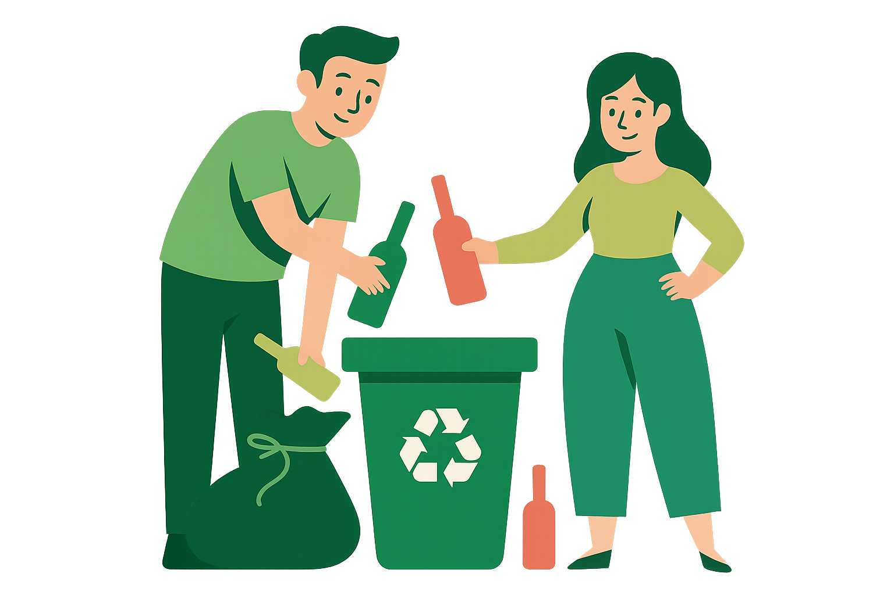
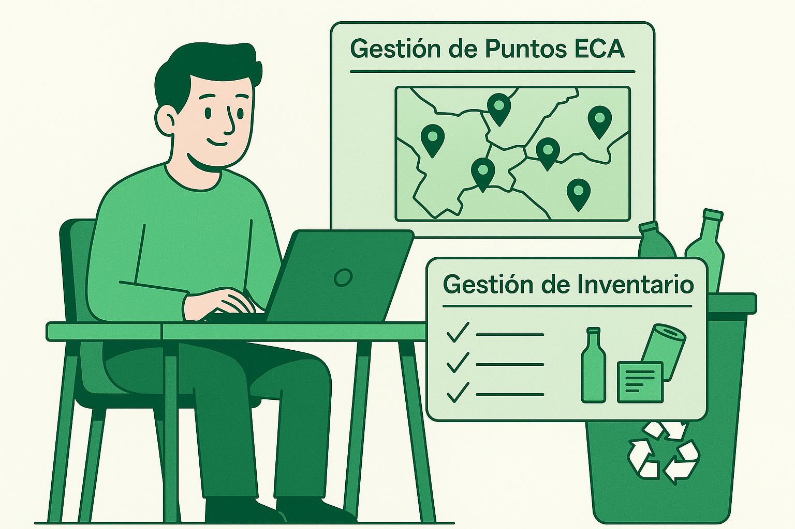
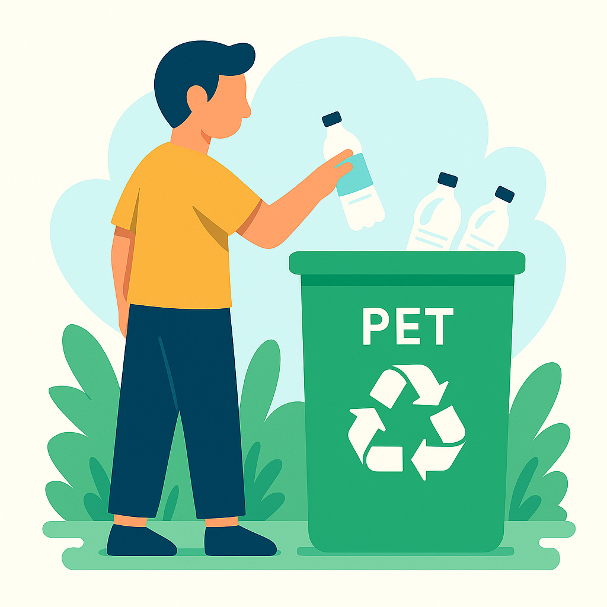

Grammar: Present Perfect • Present Perfect Continuous • Simple Past
• Used to / Be used to / Get used to • Past Continuous • Future •
Conditionals • Should / Would
Project Characterization
ECA Points
Stations have been facing inventory management difficulties
without a digital tool to track materials, and lacked a feasible
way for citizens to reach them.
Problem #1
Citizens
Citizens had no access to recycling education, lacked
visibility into ECA point materials and inventory capacity,
and had no direct channels to contact station managers.
Problem #2
Target Market
Citizens of Bogotá
Common citizens interested in recycling who have been searching for
accessible information on where and how to recycle. They will get used to having
a platform with ECA point locations, materials, and real-time inventory.

Present Perfect Continuous
ECA Station Operators
Station administrators who should supervise purchase and sale
transactions of recyclable materials. They are used to managing inventory
manually, but through our platform they would digitalize their operations.

Should / Would & Be used to
Primary geographic focus: Bogotá, Colombia —
expanding toward other cities along the 2030 roadmap.
Product / Service Identification
Three fundamental cores focused on managing recycling materials efficiently and creating an educational space.
Admin Panel
ECA administrators have been supervising purchase and sale
transactions of recyclable materials through this panel.

Social Module
Citizens will be able to see content and acquire knowledge
about collection, management, and recycling.
Direct Chat
A direct chat between citizen and collection point that ensures
fluid communication without intermediaries between these two actors.

Project Costs (12 Months)
3
Full-Time Developers ADSO-trained
5,760
Total Hours 3 × 8h × 240 days
>50M
Colombian Pesos Total budget
Development
~43M COP
Architecture & QA
~7M COP
Contingency (15%)
~7M COP
> 57,000,000 COP
“If we had not included this contingency fund, the project would have been at risk financially.”
Third Conditional & Would
Strategic Roadmap 2030
A growth path seeking to position InfoRecicla as the main recycling software, becoming a standard in the industry.
1
Short Term
Implementation with small recycling points, verifying true
functionality and real impact, adapting the platform to real user needs.
Validation Phase
2
Medium Term
Native apps (desktop & mobile) improving accessibility.
IoT device integration for real-time inventory traceability
from purchase to sale. Recycling metrics for Bogotá.
Expansion Phase
3
Year 2030
Advanced AI data analytics connecting ECA points to
large-scale recycling transforming industries, building
real environmental change.
Leadership Phase
“If we had not planned this growth path, the project would not have been
able to reach its goal by 2030.”
Third Conditional & Get used to
Advertising Piece
Discover the platform that connects you with recycling
InfoRecicla
Technology giving life to your waste. Find ECA points, check inventory in real time,
learn about recycling, and chat directly with station managers.
Find ECA Points
Learn & Educate
Direct Chat
Join the recycling community today!
This advertisement is oriented toward both citizens searching for accessible recycling
information and ECA station operators who should modernize their inventory management.
If you were a citizen looking to recycle, you would find everything you need here.